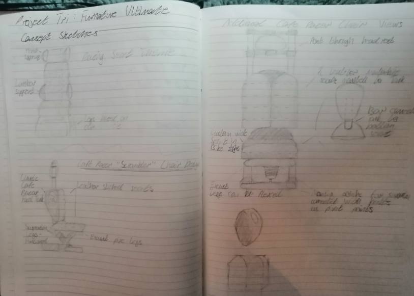

With a HNC in Computer Aided Draught Design I have acquired a multitude of skills towards industries such as product design and architecture primarily working within software such as AutoCAD. Here a few projects with only 1 years progress learning the program and CAD have shown my quick ability to learn new programs and adapt to new enviroments.
For my last full project in HNC Computer Aided Draught Design I was tasked with creating and presenting a chair made of multiple components created within Autodesk Inventor. In this project I created a decorative chair made of old motorcycle parts, I modelled each individual part and assembled them within Inventor.
I started this project with a good idea of what I wanted to build and as a result the sketchbook was brief but useful in putting my multiple ideas onto paper and solidifying the final design process.
Lastly for this project I was required to create a presentation on the development of this product and present to the class to show my working and further convince them why my product was worth buying.
Website Created by Delarno Herbert